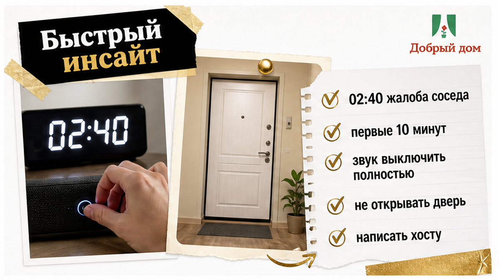
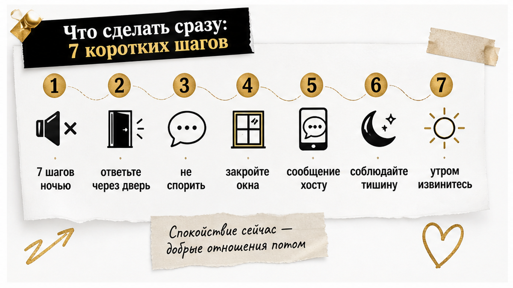
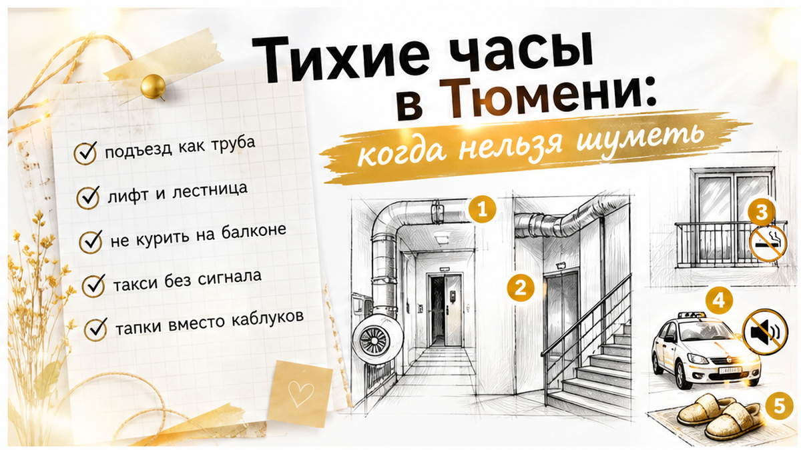
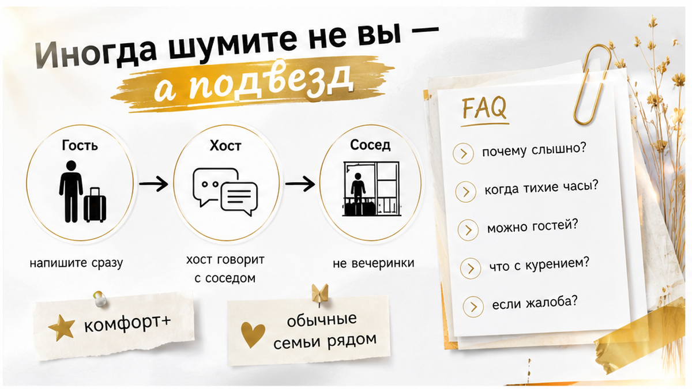
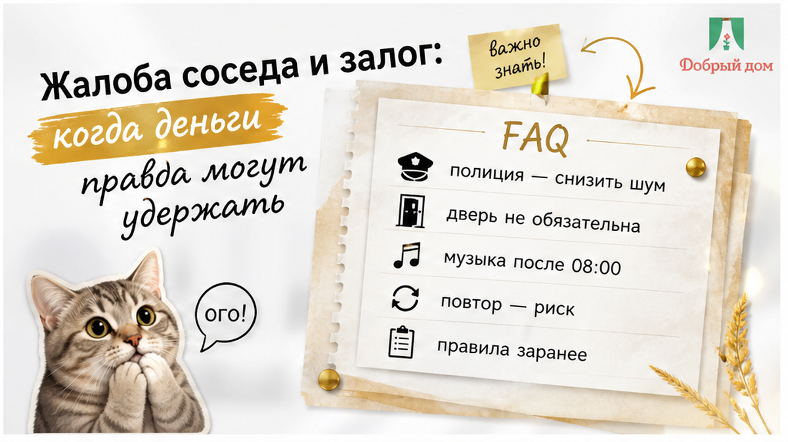

02:40. В дверь не звонят — стучат ладонью.
«Вы что там делаете? У меня ребёнок спит. Я полицию вызываю».
Вы в Тюмени на два дня. Вчетвером сидели на кухне, музыка играла с телефона, разговаривали. Вам казалось — тихо.
А соседу снизу слышны стулья, каблуки, басы и каждый шаг.
Сейчас главное — не спорить и не делать вид, что никого нет. Эти первые десять минут решают многое: утром все забудут историю или она дойдёт до хоста, полиции и разговора про залог.


Самый спорный пункт — четвёртый.
Часто хочется выйти и доказать: «Мы вообще-то не шумели». Но в три часа ночи никто не готов разбирать, кто прав. Ночью лучше погасить конфликт. Объясняться — днём.
Про шум, курение на балконе, лишних гостей и парковку мы собираем понятные разборы в канале: t.me/Dobriy_dom_72.
Ночью сложно быстро соображать. Поэтому вот простой порядок.
1–2 минута. Тишина. Выключили колонку, телевизор, музыку с ноутбука. Не поставили на минимум — выключили.
3–4 минута. Ответили через дверь. Одной фразой, ровно, без «а докажите». Незнакомому человеку ночью открывать не обязаны. Вежливого ответа достаточно.
5–7 минута. Написали хосту. Например: «Здравствуйте, в 02:40 сосед снизу пожаловался на шум. Музыку выключили, ситуацию закрыли».
Это важнее, чем выглядит. Хост сначала услышит вашу версию, а не только звонок соседа со словами «там гуляют».
8–10 минута. Убрали всё, что может шуметь дальше. Мебель не двигаем до утра. Стирку и посудомойку — тоже. Душ делаем тише и короче: стояк иногда слышно на несколько этажей.
Если приехал наряд — не паникуйте. Спросят, кто снимает квартиру и на каком основании. Скажите, что квартира снята посуточно, назовите хоста, покажите переписку о брони.
Подтверждённая бронь и договор — нормальный ответ. Поэтому переписку до выезда лучше не удалять.

Гости из других городов часто думают: «После одиннадцати потише — и всё». В Тюменской области режим тишины строже.
Шум — это не только колонка.
Музыка, громкий телевизор, крики, передвижение мебели, топот, ремонт, лай собаки. Даже сигнализация машины под окнами может стать причиной жалобы.
Дневной тихий час часто ловит гостей на заселении. Приехали, катят чемодан по полу, переговариваются через комнаты, двигают вещи — и попадают ровно в окно с 13:00 до 15:00.
Если заселяетесь в это время, просто говорите тише и не начинайте большую перестановку.
И ещё честный момент: сосед может пожаловаться и в 21:30. Формально время ещё не ночное. Но в доме с тонкими стенами слышно всё — особенно в старых панельных домах Тюмени.

Половина ночных жалоб начинается ещё до квартиры.
Подъезд работает как труба. Кто-то громко смеётся на первом этаже — а слышат на пятом. Компания зашла, обсуждает вечер, хлопнула дверью, вызвала такси сигналом под окнами. Сосед уже раздражён, даже если в квартире потом тихо.
И да, обувь в квартире — отдельная история. Каблуки и жёсткая подошва по плитке для соседа снизу звучат как удары. Тапки иногда решают вопрос лучше любого извинения.
В «Добром доме» простое правило: если что-то случилось — напишите сразу.
Сосед стучит. Не работает домофон. Вода, ключ, шум, непонятная ситуация — не ждите утра и не оставляйте это на отзыв после выезда.
Когда сосед звонит нам первым, мы слышим только одно: «В квартире гуляют». Когда первым написал гость, у нас есть и другая сторона: музыка выключена в 02:42, конфликт закрыт.
Дальше мы сами говорим с соседом или УК. Гостю не нужно ночью участвовать в этом разговоре.
Наши квартиры уровня комфорт+ находятся в жилых домах, где рядом живут обычные семьи. Не общежитие и не место для вечеринок. Поэтому правило тишины — не формальность, а условие, на котором всем спокойно.
Написать нам можно в MAX: max.ru/id660300569233_biz. Инструкцию по заселению и правила тишины шлём заранее, не у двери.
Если нужен человек прямо сейчас — менеджер: t.me/Dobriy_dom_Tyumen. Телефон: +7 993 574-83-22.
Знаете заранее, что приедете в 01:00? Скажите об этом при бронировании. Подскажем, как зайти тише. И посмотрите нашу инструкцию по бесконтактному заселению — там всё по шагам.

Сам по себе звонок соседа не означает, что залог не вернут.
Залог — это не наказание за чужое плохое настроение. Он нужен на случай ущерба и нарушений условий проживания.
Обычно вопрос об удержании появляется, если:
Что помогает не спорить на выезде: ответить на первое сообщение хоста, сохранить переписку и снять квартиру на видео при заселении и выезде.
Тридцать секунд видео часто закрывают вопросы, на которые потом уходят часы переписки.
Если вам просто говорят «залог не вернём» и ничего не объясняют — это уже другая ситуация. Мы разбирали её отдельно: перевёл залог, а на выезде сказали «не вернём».
Как правило, попросят снизить шум. Спокойно скажите, что квартира снята посуточно, назовите хоста, покажите подтверждение брони. Потом сразу напишите хосту.
Не обязательно. Можно ответить через дверь, извиниться и выключить звук. Разговор лицом к лицу лучше перенести на утро: ночью он легко превращается в спор.
После 08:00 в будни и после 09:00 в выходные и праздники. И не забывайте про тихий час с 13:00 до 15:00.
Если после предупреждения стало тихо — обычно нет. Риск выше при повторе, вечеринке или лишних гостях, которых не указали в брони. Поэтому сообщения хоста лучше не игнорировать.
Ночной стук в дверь — неприятно. Но это не катастрофа.
Выключили звук. Спокойно ответили. Написали хосту. Убрали причину шума.
И утром это останется мелкой историей, а не проблемой на весь выезд.
Нужна квартира в Тюмени, где правила проживания объясняют заранее: добрыйдом-72.рф. Бронь: забронировать онлайн.
По конкретной дате звоните: +7 993 574-83-22.
А к вам когда-нибудь стучали ночью в чужом городе? Из-за музыки, чемодана, каблуков или совсем неожиданной причины? Напишите в комментариях.